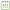

<!--
  Generated template for the CalendarPage page.

  See http://ionicframework.com/docs/components/#navigation for more info on
  Ionic pages and navigation.
-->
<ion-header>
  <ion-navbar class="header_font" color="primary">
		<ion-title>Calendar</ion-title>
		<!-- <ion-buttons end>
			<button ion-button icon-only (click)="presentPopover($event)">
				<ion-icon name="more"></ion-icon>
			</button>
		</ion-buttons> -->
  </ion-navbar>
</ion-header>
Welcome to Calendar
<ion-content padding>
	<object style="max-width: 156px; width: 100%; margin: 30px auto 30px auto; left: 0; right: 0; display: block;" type="image/svg+xml" data="../../assets/imgs/logo.svg">
		Your browser does not support SVG
	</object>
	<!--<div style="overflow: hidden;">
		<div float-left class="my-checkbox">
			<ion-checkbox checked class="task_chkbx" name="receive_calls">
			</ion-checkbox>
			<ion-label chkbx_lbl text-uppercase>Orga-Nice</ion-label>
		</div>
	</div>	-->
	<div class="btn_group">
		<button ion-button block class="opt_btn" (click)="goweeklycalender()">Weekly</button>
		<button ion-button block class="opt_btn" (click)="gomonthlycalender()">Monthly</button>
		<button ion-button block class="opt_btn" (click)="goaddevent()">Add Event</button>
		<button ion-button block class="opt_btn">Import Events from Other Calenders</button>
	</div>
</ion-content>
<!--<ion-footer class="footer_section">
    <p class="footer_content">Orga-nice 2019 all Rights Reserve</p>
</ion-footer>-->